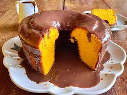

Inicio

Bolo de Cenoura
Ingredientes:
- Massa:
- 3 cenouras médias
- 3 ovos
- 1 xícara de óleo
- 2 xícaras de açúcar
- 2 xícaras de farinha de trigo
- 1 colher de sopa de fermento em pó
- Cobertura:
- 1 xícara de chocolate em pó
- 1/2 xícara de açúcar
- 1 colher de sopa de manteiga
- 1/2 xícara de leite
Modo de Preparo:
- Rale as cenouras e reserve.
- No liquidificador, bata os ovos, o óleo e as cenouras raladas até obter uma mistura homogênea.
- Em uma tigela, misture o açúcar, a farinha de trigo e o fermento.
- Adicione a mistura do liquidificador aos ingredientes secos e mexa bem.
- Despeje a massa em uma forma untada e enfarinhada.
- Asse em forno preaquecido a 180°C por aproximadamente 40 minutos, ou até que um palito saia limpo ao ser inserido no centro do bolo.
- Enquanto o bolo assa, prepare a cobertura: em uma panela, misture o chocolate em pó, o açúcar, a manteiga e o leite. Leve ao fogo baixo, mexendo sempre, até obter uma consistência cremosa.
- Após o bolo esfriar um pouco, despeje a cobertura sobre ele.
- Está pronto para servir!